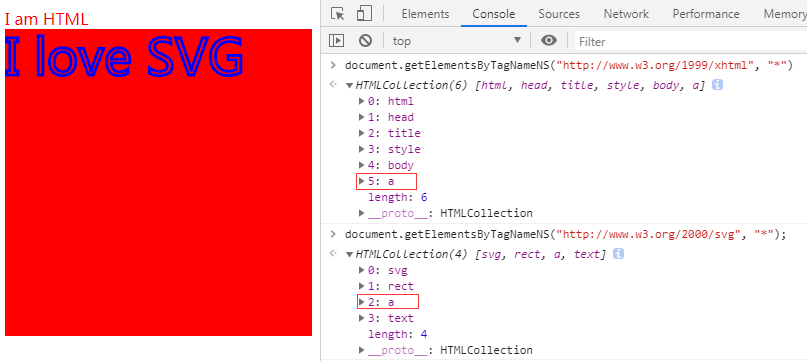

重学前端 - 浏览器部分-节点种类
DOM
DOM API 大致会包含 4 个部分:

要重点掌握的是：Document、Element、Text 节点。DocumentFragment 也非常有用，它常常被用来高性能地批量添加节点。
console.time("sort1");
for (var i1 = 0; i1 < 10000; i1++) {
var p1 = document.createElement("p");
var oTxt1 = document.createTextNode("段落" +i1);
p1.appendChild(oTxt1);
document.getElementById("sort1").appendChild(p1);
}
console.timeEnd("sort1");
console.time("sort2");
var oFragment = document.createDocumentFragment();
for (var i2 = 0; i2 < 10000; i2++) {
var p2 = document.createElement("p");
var oTxt2 = document.createTextNode("段落" + i2);
p2.appendChild(oTxt2);
oFragment.appendChild(p2);
}
document.getElementById("sort2").appendChild(oFragment);
console.timeEnd("sort2");
实测对比，运行相差最长5ms,有些情况下sort1执行时间小于sort2，有点迷~
Node
Node 是 DOM 树继承关系的根节点，它定义了 DOM 节点在 DOM 树上的操作
Node下属性：
parentNode
childNodes
firstChild
lastChild
nextSibling
previousSibling
Node下方法：
appendChild
insertBefore
removeChild
replaceChild
创建Node：
DOM 标准规定了节点必须从文档的 create 方法创建出来，不能够使用原生的 JavaScript 的 new 运算。于是 document 对象有这些方法。
createElement
createTextNode
createCDATASection
createComment
createProcessingInstruction
createDocumentFragment
createDocumentType
Element 和 Attribute
Element(元素)作为Node（节点）的子类，是大部分时候我们比较关注的。元素对应了 HTML 中的标签，它既有子节点，又有属性。所以 Element 子类中，有一系列操作属性的方法：
getAttribute
setAttribute
removeAttribute
hasAttribute
还可以把 Attribute 当作节点(IE6,7也是支持的)：
getAttributeNode
setAttributeNode
关于getAttributeNode：返回的是Attr类型的属性节点
document.getElementById("app").getAttributeNode("id").nodeValue===document.getElementById("app").getAttribute("id")
查找元素
document 节点提供了查找元素的能力：。
querySelector
querySelectorAll
getElementById
getElementsByName
getElementsByTagName
getElementsByClassName
我们需要注意，getElementById、getElementsByName、getElementsByTagName、getElementsByClassName，这几个 API 的性能高于 querySelector。而 getElementsByName、getElementsByTagName、getElementsByClassName 获取的集合并非数组，而是一个能够动态更新的集合。
遍历
除了使用JavaScript 遍历整个树外，还可以通过DOM API 中的 NodeIterator 和 TreeWalker 来遍历树。
var iterator = document.createNodeIterator(document.body, NodeFilter.SHOW_TEXT | NodeFilter.SHOW_COMMENT, null, false);
不常用，知道即可
Range
Range API 表示一个 HTML 上的范围，这个范围是以文字为最小单位的，所以 Range 不一定包含完整的节点，它可能是 Text 节点中的一段，也可以是头尾两个 Text 的一部分加上中间的元素。
我们通过 Range API 可以比节点 API 更精确地操作 DOM 树，凡是 节点 API 能做到的，Range API 都可以做到，而且可以做到更高性能，但是 Range API 使用起来比较麻烦，所以在实际项目中，并不常用，只有做底层框架和富文本编辑对它有强需求。
var range = new Range(),
firstText = p.childNodes[1],
secondText = em.firstChild
range.setStart(firstText, 9) // do not forget the leading space
range.setEnd(secondText, 4)
命名空间
创建元素和属性相关的 API 都有带命名空间的版本：
createElementNS
createAttributeNS
getAttributeNS
setAttributeNS
attributes.setNamedItemNS
...
在 HTML 场景中，需要考虑命名空间的场景不多。最主要的场景是 SVG。
SVG
SVG 是使用 XML 来描述二维图形和绘图程序的语言。我们可以查看一个svg实例，关于命名空间的问题可以查看《Javascript高级程序设计》第12章 DOM2和DOM3,下面简要记录一些命名空间的相关内容：
命名空间
有了XML命名空间的，不同 XML 文档的元素就可以混合在一起，共同构成格式良好的文档，而不必担心发生命名冲突（扩展阅读：XML,HTML以及XHTML的区别）
譬如，我们看一个混合 XHTML 和 SVG 语言的文档
<html xmlns:h="http://www.w3.org/1999/xhtml">
<head>
<title>Example XHTML page</title>
<style>
@namespace svg url(http://www.w3.org/2000/svg);
@namespace html url(http://www.w3.org/1999/xhtml);
html|a {
color: red;
}
svg|a {
stroke: blue;
stroke-width: 1;
}
</style>
</head>
<body>
<a>I am HTML</a>
<svg xmlns:s="http://www.w3.org/2000/svg" version="1.1" viewBox="0 0 100 100" style="width:100%; height:100%">
<rect x="0" y="0" width="100" height="100" style="fill:red" />
<a width="10" height="10"><text x="0" y="15" fill="red">I love SVG</text></a>
</svg>
</body>
</html>
我们通过带有命名空间版本的DOM api访问得到的结果是(css中也有命名空间)：
